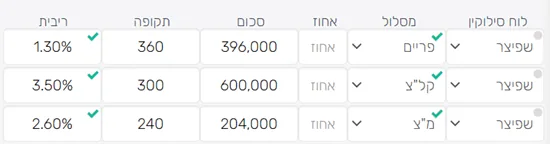
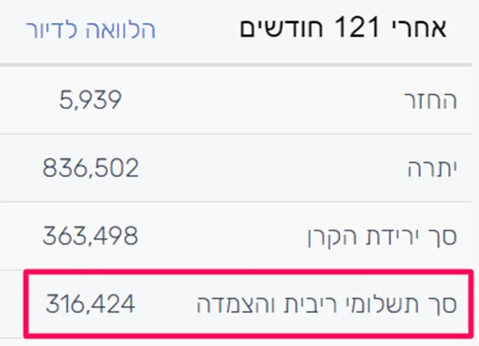
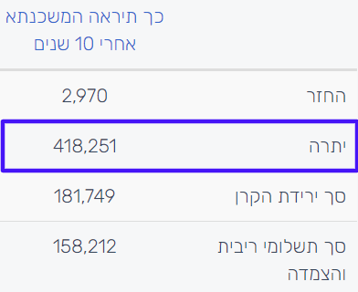

זוגות צעירים רבים משוחחים איתי על השאיפה הגדולה שלהם ברכישת בית למגורים
״אנחנו עובדים מאוד קשה וחסכנו הון עצמי״
“האם עלינו לצאת לשכירות? או כבר עם הסכום הזה לקנות בית מגורים?”
פה מקור הטעות!
המאמר הבא יהיה מקיף מספיק שבסופו אתם תבינו בדיוק מה עליכם לעשות
אם אתם בני 20 – 40
לפני שאצלול לתשובה המפורטת עלי לסייג שלכל כלל יש יוצא מהכלל.
במאמר אתייחס לדוגמאות ספציפיות עם השוואות כמה שיותא זהות ע”מ לתת לכם נקודות למחשבה שיסייעו לכם בדילמה,
לכל זוג כמובן הדילמה שלו והמאמר בא לתת לכם כלים לבחינה, מה לכם נכון לעשות.
דירה למגורים זה לא עניין רציונאלי
לפעמים ישנם החלטות שאינם בהכרח כלכליות,
כל פעם שתכניסו רגש להחלטה שלכם – יש פה טעות כלכלית,
הסיבה היא שהכסף הוא לא המטרה.
אלא האמצעי.
לכן, אם תגורו בשכירות אבל לא תהיו מאושרים,
מה זה שווה שעוד 20 שנה אולי (הדגש פה הוא על “אולי” תמשיכו לקרא ותגלו)
יהיה יותר כסף בבנק
20 שנה של כאב
20 שנה של ריבים ופרצופים
יש פה עניין פסיכולוגי עמוק.
אכן לקנות דירה זה לא עניין רציונאלי
תחזית הנדלן שלי 2021
תחזית הנדל”ן בארץ שאולי תיתן לכם עוד נקודה למחשבה
לסל השיקולים בדילמה הלא פשוטה.
טוב, נביא אני לא ולא מתיימר להיות כזה.
רק אם אקח את הנתונים שעל פני השטח.
ארץ ישראל הקטנה שלנו משתרעת על פני שטח 22,072 קמ”ר
נכון ל דצמבר 2019 יש בישראל כ- 6,772 מיליון יהודים
בעולם, יש עוד מיליוני יהודים החפצים לקחת בה חלק…
אם השטח כ”כ קטן והיהודים כה רבים האם שוק הנדל”ן רק ירד באופן גורף?
נכון, לכל שוק עליה וירידה ומה שהיה הוא לא בהכרח מה שיהיה,
אבל להערכתי, בהסתכלות zoom out בעליה לאורך השנים.
להכניס לסל השיקולים
- כאשר אתם מסתכלים על דירה למגורים,
משהו צף בכם מאותן 2,000 שנות גלות.
דירה למגורים הפכה לשאיפת חיינו…(לפני חינוך, זוגיות, משפחה ועוד… האומנם?)
באירופה למשל אין את משחק של “הדירה הנאה בגיל המוקדם ביותר”.
- לצערי היום מי שגרר 20 שנה בדירה שכורה
עלול להיחשב בעיניי חבריו ללא מוצלח כלכלית (מה שכמובן לא משקף כלום!)
- לשכור דירה להשקעה לא מתאים לכולם וזה אף כרוך
בלא מעט סיכונים כמו:
– הדירה תעמוד ריקה.
– מסלולי משכנתה שחלקם צמודים למדד ועלולים לעלות (עליה של בין 200 – 600 ₪).
– התמודדות מול שוכרים שאינם משלמים.
– ירידת ערך / עליית ערך/ כל דבר אחר.
– תיקונים והוצאות בלת”מ ועוד…
הטעות הקריטית שתגרור אתכם להתפשרות בחיים
בחלק זה של המאמר החלטתי לתת לכם דוגמאות תכלס.
פה אסייג ואגיד שהדוגמא מדברת על זוגות צעירים עד גיל 35-40 תלוי בסוג האנשים שאתם.
״אנחנו עובדים מאוד קשה וחסכנו הון עצמי״
“האם עלינו לצאת לשכירות? או כבר עם הסכום הזה לקנות בית מגורים?”
פה מקור הטעות!
כל המחשבות בשאלות אלו, הם מתי יהיה הרגע הנכון שבו תקנו דירת מגורים.
כאילו דירת המגורים זו חזות הכל והיא המטרה שלשמה באתם לעולם.
אשקף לכם מיד עד כמה העבדות הזו טמונה בנו.
השאלה שאנחנו צריכים לשאול היא:
“עם ההון העצמי שיש לנו איך אנחנו ניצור עבורנו עצמאות כלכלית,
בסיסי כלכלי נכון וחופש לגדל את ילדינו בצורה הטובה ביותר.”
הדוגמא שאתן היא משיחות אמתיות עם זוגות שליוויתי כלכלית.
תוכלו לעשות את ההקשרים הנכונים לכם.
1. עם הון עצמי של 300-400 אלף כנראה לא תרכשו את בית חלומותיכם,
לכן הטעות הראשונה היא-שתתפשרו על בית שלא ממש חלמתם.
- נניח ותקנו את הבית שאתם חולמים, הבית יעלה סביב ₪ 1,500,000? שיהפוך ל ₪ 1,600,000
למה? כי תשלמו למתווך, לעו״ד, בדירה מקבלן השינויים שתבצעו, ריהוט חדש
(משכנתא של 1,200,000) שזה החזר חודשי קרוב ל5,000 ₪ -5,500 ₪ (שזה החזר נמוך).
- להחזר כזה תאלצו לפרוס את המשכנתא למסלולים משתנים של 20, 25 ו 30 שנה (לצורך הדוגמא בלבד) רכשתם דירה לכם ולא פחות – לבנק!
הריבית שתשלמו על אותם 1,200,000 ₪ יהיה כ 582,520 ₪ .
אחדד, לקחתם 1,200,000 ₪ החזרתם את אותם 1,200,000 ₪ + 582,520 ₪ ריבית לאורך השנים.

(תמהיל בסיסי מאוד ולא מתוחכם רק לצורך הדוגמא)
פה הטעות!
מוכרים את עצמכם לבנק, מבלי לייצר עוד מקור הכנסה בשלב מוקדם יחסית של החיים.
עכשיו אני רוצה לשאול אתכם,
כעבור כ10 שנים מיום לקיחת המשכנתא, מה הסכום שנשאר לשלם?
836,520 ₪ (לפי הדוגמא מעלה).
נחשו כמה ריביות שילמתם (כסף לבנק) – 316,424 ₪

ומה קרה להון העצמי שלכם ב10 שנים? כלום. נשאר בקירות הבית.
לכן קניית בית למגורים כאשר אתם עוד זוג צעיר זו ממש טעות של צעירים!
מה כן לעשות
אתם הרי רוצים גם לבנות עתיד כלכלי טוב יותר למשפחה
וגם לא להתפשר באיכות חיים!
מה שאני מציע הוא מאוד פשוט. עליכם לבנות ביטחון ועצמאות כלכלית!
היום כדי לשרוד צריך 2 משכורות, נכון?
אבל בשביל לשגשג צריך 3 משכורות!
כאשר המשכורת השלישית היא החשובה ביותר.
זו הכנסה פסיבית שאינה תלויה אם תצאו לעבודה או לא.
אינה קשורה איזו עבודה תהיה לכם.
אתם כזוג צעיר צריך בשלב זה של החיים להגדיל את ההון כמה שיותר ע”מ להגיע לשלבים מתקדמים יותר ללא לחץ כלכלי (ילדים, משפחה, בית מגורים ועוד).
עכשיו נחזור לדוגמא שלנו,
נניח ואתם תגורו בשכירות באותו בית שרציתם לקנות,
כמה שכירות תעלה? לצורך הדוגמא תשלמו כ3,500₪ שזה כבר חיסכון של כ2,000₪ בחודש.
שזה הפער בין תשלום המשכנתא שקודם רציתם, לבין שכר הדירה שאתם משלמים.
ואתם גרים באותה דירה ללא כל התפשרות!!
מה עושים עם ה 2,000 ₪ ?
שתי אופציות לפניכם:
א. תחסכו בבנק, משמע 2,000 כפול 120 חודשים = 240,000 ₪ חיסכון.
ב. תיקחו הלוואה בנקאית בגובה נניח של 200,000 ₪ היום,
עליהם תחזירו 1,656 ₪ (בתנאים של 3% ריבית בפריסה של 144 חודש).
את אותם 200,000 ₪ תשקיעו ותקבלו באופן סולידי 6.5% נטו (אחרי מיסים).
תכלס אחרי 120 חודשים באופציה ב’ יהיה לכם 336,000 ₪ (200,000 ₪ מהבנק + 136,000 ₪ שהרווחתם מההשקעה).
מה עם ההון העצמי של 300,000 – 400,000 ₪ שכבר יש בידכם?
תקנו דירה קטנה להשקעה אשר תניב לכם תשואה חודשית כל חודש!
לצורך הדוגמא, על 400 אלף ₪ תקבלו כ 1,200₪ בחודש (3.6% תשואה)
כמובן שהייתי שוקל ברצינות משכנתא של כ 600,000 ₪ וככה להגדיל את פרופיל השוכרים ואת אופציות הרכישה.
בנוסף כך תעמדו על משכנתא נהדרת של 60% מימון דבר שיאפשר לבנק להעניק לכם ריביות נוחות יותר.
על דירה בשווי 1,000,000 ₪ נניח תקבלו שכירות של 3,000 ₪ שזה 3.6%
(החישוב: 3,000 ₪ כפול 12 לחלק ל1,000,000 ₪ = 3.6% תשואה)
מה יקרה אחרי 10 שנים?
אתם בעלים גאים של דירה ששווה לפחות מיליון ₪,
נשאר עליה משכנתא של 418,251 ₪ (אם תמכרו עכשיו יש לכם ביד – 518,749 ₪ )

כל זה ללא עלית ערך כלל!!!! לדעתכם דירה כזו הערך שלה יעלה ב 10 שנים?
אם עניתם – “לא!” לכו לתחילת המאמר.
יש לכם במקביל עוד השקעה בשווי 336,000 ₪
והכי חשוב, אין לחץ כלכלי!
יש כאלו שיגידו
“אם אותם נתונים, למה לא לקנות דירה למגורים?”
לאנשים אלו אענה, שאת הדירה למגורים לא תמכרו.
זוכרים שלא הכל כסף?
אחרי שרכשתם את דירת החלומות, לא תמכרו אותה כ”כ מהר ולכן לא תהנו מההון שנצבר בקירות הבית (לפחות לא בשלב זה).
בנוסף, דירה למגורים לא נגמר עליה ההוצאות.
שיפוץ פה, שדרוג שם, ריהוט חדש, גינה מכובדת ועוד.
מה שסביר להניח שקצת תתקמצנו בדירה בשכירות שתגורו.
נכון, להתחיל ברמת חיים מעט נמוכה ביחס ליכולות שלנו ע”מ לעלות ברמת החיים לאט לאט עם הגדלת ההון שיאפשר זאת.
אתם כן רוצים לגור בדירת מגורים
אני לא מתנגד, אם זה מה שיגרום לכם שקט נפשי אני אפילו בעד!
אך אם תבינו את המשמעות בדחיית סיפוקים,
במקביל לצעדים כלכליים נבונים,
אחרי 10 שנים תוכלו לבנות את ביתכם ללא פשרות,
ועם הון עצמי נוסף ע”מ לייצר לעצמכם משכורת שלישית שתאפשר לכם שקט נפשי כלכלי.
ככה בונים חומה כלכלית! והכי חשוב בכל המהלך, נתתם לכסף לעבוד בשבילכם ובניתם למשפחה שלכם עצמאות כלכלית והכל ללא כל התפשרות!
אם כבר אז כבר
אם החלטתם שיש לכם את מירב הכלים להחליט האם לרכוש
דירה למגורים או להשקעה,
אז אל תפסיקו לקרא לפני שאגיד לכם שעליכם לעשות הערכות שכלכלית מדויקת.
א. האם אתם עומדים בתשלומי המשכנתא לאורך השנים.
ב. אולי הקניה היקרה ביותר שלכם,
כך שאם לא התפשרתם על דירה למגורים / להשקעה, אל חסכו על יעוץ משכנתא שכנראה יחסוך לכם מאות אלפי שקלים.
אם חיפשתם אחד כזה שיעשה לכם סדר בעניינים הפיננסים,
אני מכיר אחד מומלץ 😊
פשוט לחצו על הלינק ושילחו לי הודעה לווטסאפ האישי
הקדשה מיוחדת
תודה לחברי נדב שנתן לי דרייב לכתוב תשובה מנומקת זו:)